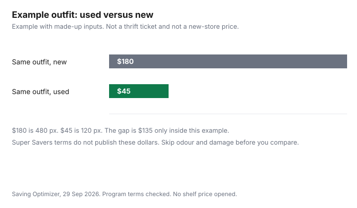

Clothing · Canada
Value Village and Thrift Shopping in Canada: Super Savers Club, Senior Days and What's Worth Buying Used
Thrift is still a way to pay less per wear, but only when the garment is sound and the discount you are counting on is written down. This page uses the Super Savers Club program terms for Canada on valuevillage.ca, effective 18 August 2026, as of 29 Sep 2026. Those terms do not publish a universal 50 percent-off day. They do publish a free membership, how Flexpoints are earned, and a birthday offer with a cap. Senior days are not given a percent in that Canada text. If your store runs one, the sign in that store is the rule, not a national rumour. Selling what you will not wear is the online resale comparison. This is shopping method, not a promise that every rack is a deal.
Key takeaways
- The Canada program terms effective 18 Aug 2026 say there are no membership fees at this time. You must live in Canada, be at least 18, and give a telephone number and email address. Online sign-up also asks for a postal code.
- In a Canadian Value Village or Village des Valeurs, members earn one Flexpoint per eligible dollar. One hundred Flexpoints are $1 off, in increments of 100. Points are not earned on sales tax or gift cards, and they may not be used on red-tag new merchandise or combined with another discount.
- A birthday coupon is 20 percent off one purchase of up to $50, once in your birth month, if the birth month is on the profile before the first day of that month.
- Suede status requires at least $500 of merchandise in one calendar year, excluding tax and gift cards.
- Buy used when the fabric, closures, and smell survive a close look. Skip worn shoes, stretched knits, odour, swimwear, and intimates. Wash before you wear, using the care label and the cold-water laundry guide.
How the free Super Savers Club works
The terms say the program is offered by TVI, Inc. and Value Village Stores (Canada) for shoppers at participating Savers, Value Village, Village des Valeurs, and Unique stores. The benefits printed below the country split are the ones that apply to members and stores in Canada.
Corporations, partnerships, limited liability companies, and trusts may not enrol. There are no membership fees associated with the program at this time. That sentence is the fee. It is not a promise that a fee will never be added. The terms say the operator can change or end a benefit, with email notice of a material change to the address you gave them.
You can join at self-checkout or a cashier in a participating Value Village or Village des Valeurs by giving a telephone number and email address. You can join online at the Super Savers Club signup, where postal code, telephone number, and email are the required fields. You can also join by text from in-store signage. Standard message and data rates may apply, and STOP unsubscribes. An email confirms registration. Offers are not transferable, and each member needs a unique email and telephone number. Savers employees may join, but they do not earn points on purchases made with an employee discount, and they may not stack a program offer on that discount.
Flexpoints, in the words of the terms
Members who shop at Value Village or Village des Valeurs in Canada earn Flexpoints by entering their telephone number or email at the cash register. The rate is one Flexpoint for every eligible dollar spent. At 100 Flexpoints, the balance can be redeemed for $1 off the next purchase. Points redeem in increments of 100. The terms' own example: 300 Flexpoints can come off one purchase as $3. Newly earned points may be delayed up to 24 hours. Points never expire for active members, and they may expire after 24 months of inactivity. A footnote says there is no lifetime cap, and another footnote caps the balance at 4,900. Points are redeemed in increments of 100 during a purchase to stay under that balance, or new points are not added. Read both footnotes together. They are not a 1 percent cash-back card you can transfer to a bank.
Flexpoints may be redeemed only in Value Village and Village des Valeurs stores in Canada. They may not be combined with any other discount or offer. They may not be used on new merchandise with red tags or on gift cards. They are not earned on sales tax or on gift cards. If you exchange merchandise bought with points, the terms say only the tendered amount is credited toward a same-day exchange, and the redeemed points return to the account. You can see the balance on the Check Balance site linked from the terms. Everyone starts at Denim status. Suede status is for members who spend at least $500 on merchandise at participating Value Village stores in one calendar year, 1 January to 31 December, excluding tax and gift cards. Status lasts for the year you qualify and the following full calendar year, then you must requalify. The terms' example: Suede reached in July 2024 would have been valid until 31 December 2025. Suede adds the Denim benefits, a coupon for a reusable tote (up to $2.49 in value), and a chance to enter sweepstakes. Those rewards can be changed. They are not cash.
Senior and member discounts: what the published terms say
The Canada terms list notifications a member may receive, where the offer exists in that country or region: sale and discount days, exclusive coupons, a special birthday discount, pre-sales and grand openings, email content and contests, and spontaneous limited-time offers. Club Member Exclusive events require the telephone number or email at the register.
Some discounts, sales, and offers may not be combined. The email or the signage is the detail. Coupons may arrive by email or text, including a QR code to scan. The birthday rule is specific: 20 percent off a purchase of up to $50, once during the birth month, emailed if the birth month was added before the first day of that month. A cashier or customer care can add the month if it is missing.
What the same page does not say matters as much. It does not name a senior age, a senior percent, or a Tuesday. It does not describe a 50 percent-off day for the whole country. Some benefits differ by region, based on the store where you sign up or the store your postal code is assigned to, and a purchase benefit is judged by the store where you shop. If a senior day exists near you, it will be on that store's sign or in a message to members, with its own exclusions. Do not budget a 30 percent or 50 percent day that this Canada text does not contain. A third-party roundup is not the program terms. Red-tag new goods are already outside Flexpoints. Treat any extra percent as real only after you read it on the sign that applies to that visit.
What to buy used: outerwear, wool, denim, kids' clothes, formal wear
Used clothing is worth it when the remaining life is long and the flaw is one you can see. Outerwear is the clearest case: a coat with a working zipper, intact seams, and a shell that still sheds a light rain can replace a new coat you would wear for years.
Check the lining, the cuffs, and the underarms. Wool and other knits are worth it when they have not been stretched at the neck, cuffs, or hem, and when moth holes are absent. Hold the garment to the light. Denim is worth it when the seat and thighs are not thin, the button holds, and the rise still fits. Kids' clothes are worth it when the child will outgrow them before the fabric fails, except the categories in the next section. Formal wear is worth it when you need it once or twice and the size is close. A hem you can let down is a repair. A bodice that does not close is not.
None of those sentences is a price. A thrift coat at a high ticket can cost more than a new coat on sale, and this guide does not cite a flyer to compare them. The test is the garment in your hand against the new alternative you would actually buy. Household secondhand rules, including what not to buy used for safety reasons, are in the used household goods guide. Building materials and furniture at a reuse store are a different aisle: Habitat ReStore. IKEA's sell-back desk is furniture, not apparel: IKEA Sell-back and As-Is.
What to skip: worn shoes, stretched knits, anything with odour or damage
Shoes are the category most likely to disappoint. A worn sole, a compressed insole, or a heel that leans will not be fixed by a cheap polish, and this guide does not cite a cobbler price list.
If you cannot see useful tread and a stable heel, leave them. Stretched knits, especially ribbing that will not recover, will not look the way the original owner wore them. Odour that is still there after you think about it in the aisle often survives one wash. Smoke, mildew, and perfume that has set into foam or wool are the usual cases. Damage you should walk away from includes underarm rot, broken zippers on a coat you cannot replace the zip in, holes in the seat, and cracked waterproof coatings. Swimwear and intimates are in the skip table because fit and hygiene are poor bets even when the elastic looks new. Sports protective gear is a safety item, not a bargain knit. Do not buy a used helmet or a used car seat from a clothing rack. The used-goods guide is the place for those rules.
Other thrift options: charity shops, church sales, Facebook Marketplace
Value Village's own site describes a for-profit model that buys donated goods from nonprofit partners. A charity shop or a church sale is a different operator, often with a volunteer till and a cash price written on tape.
The method is the same: inspect, and do not assume a percent-off day. Church and community sales are local. This guide does not cite a national calendar for them. Facebook Marketplace is person-to-person. Use it when you want a specific size and you can inspect before you pay. Payment and meeting habits are in the used-goods guide, which already covers fake e-Transfer patterns, and in the resale comparison if you are the seller. Do not treat a Marketplace photo as a condition report. Ask for a picture of the label, the underarms, and the soles, then look again in person.
Cleaning and repairing thrift finds cheaply
Wash or dry-clean before the first wear, and keep the find out of the drawer until that is done. Read the care label.
The symbols and the voluntary Canadian care rules are in the garment-care guide. Cold-water settings and what they do to an energy bill are in the cold-water laundry guide. This page does not price detergent. A simple repair is a button, a seam that has popped, or a hem. A repair that needs a new zipper, a reline, or a patch over a thin seat often costs more in time than the garment is worth to you. If the smell remains after the care label's wash, do not store it with clean clothes. Donate it again or discard it. Do not soak it in a home remedy this guide does not test.
| Category | Lean | Reason |
|---|---|---|
| Outerwear | Buy used when sound | Zipper, seams, lining, and cuffs still do the job. A cracked coating or a broken main zip is a skip. |
| Wool and knits | Buy used when unstretched | Necks, cuffs, and hems still recover. Holes, thin elbows, and a set-in smell are skips. |
| Denim | Buy used when the seat is solid | Thighs and seat are not worn through. A missing button is a small repair. Thin fabric is not. |
| Kids' clothes | Buy used for play clothes | Children outgrow many pieces first. Underwear, swimwear, and worn shoes stay in the skip row. |
| Formal wear | Buy used for rare wear | Worth it when the size is close and you need it once. A major alteration can erase the gap versus renting or a sale price you can see. |
| Shoes | Skip if worn | Compressed insoles, leaned heels, and smooth soles are remaining life you already missed. This guide does not cite a cobbler price. |
| Swimwear | Skip | Elastic and lining are hard to judge, and hygiene is a poor bet from a rack. |
| Intimates | Skip | Same hygiene and elastic problem. Buy these new. |
| Term | What the Canada page says |
|---|---|
| Membership fee | No membership fees at this time. Age 18 or older, resident of Canada, telephone number and email. Postal code for online sign-up. |
| How rewards are earned | One Flexpoint per eligible dollar at Value Village or Village des Valeurs in Canada, when you enter your phone or email. Not earned on tax or gift cards. 100 points equal $1 off, in increments of 100. Balance cap 4,900. May expire after 24 months of inactivity. |
| What points cannot do | Not combined with another discount. Not on red-tag new merchandise or gift cards. Redeemed only in those Canadian stores. Delay of up to 24 hours possible. |
| Birthday offer | 20 percent off one purchase of up to $50, once in the birth month, if the birth month is on the profile before that month starts. |
| Suede status | At least $500 of merchandise in a calendar year, excluding tax and gift cards. Valid that year and the next full calendar year. Tote coupon up to $2.49, plus sweepstakes access. Everyone starts at Denim. |
| Senior day and 50 percent day | Not published in these Canada terms. Benefits can differ by region. Some discounts may not be combined. Read the local sign. Do not assume a universal half-off day. |

Sources
- Value Village, Super Savers Club program terms for Canada, effective 18 Aug 2026, valuevillage.ca/en/super-savers/program-terms, as of 29 Sep 2026. Free membership, Flexpoints, birthday offer, Suede spend, and the statement that benefits differ by region. No senior percent and no universal 50 percent day appear in that text.
- No Value Village homepage promotion is cited.
- Program terms from before 18 Aug 2026 are not covered here.
Frequently asked questions
Is Value Village still cheaper than buying new?
It is cheaper only when the used piece in your hand costs less than the new piece you would actually buy, and the used piece still has life in it. The Canada Super Savers Club terms effective 18 Aug 2026 do not publish a store-wide percent that makes every item a deal. They publish a free membership and Flexpoints at one point per eligible dollar, worth $1 off per 100 points. Compare the two tickets yourself, and skip odour or damage that will cost more to fix than the gap.
How does the Super Savers Club work?
It is free to join, at the time of the terms effective 18 Aug 2026, if you live in Canada, are at least 18, and provide a telephone number and email address. In a Canadian Value Village or Village des Valeurs you earn one Flexpoint per eligible dollar when you give that phone number or email at the register. One hundred Flexpoints are $1 off a later purchase, in increments of 100, and points are not earned on tax or gift cards. A birthday offer of 20 percent off one purchase of up to $50 is emailed if your birth month is on the profile before the month starts.
Does Value Village have a senior discount day?
The Canada program terms as of 29 Sep 2026 do not set a senior age, a senior percent, or a national senior day. They do say some benefits differ by region and that some discounts may not be combined. Read the sign in the store you use, and the message the club sends, rather than a rumour. Those terms also do not describe a universal 50 percent-off day.
What clothes are worth buying used?
Outerwear, wool, denim, kids' play clothes, and formal wear can be worth it when the fabric, zipper, and seams are sound. Worn shoes, stretched knits, anything with odour or damage, swimwear, and intimates are the skips, because remaining life and hygiene are hard to judge. There is no thrift price in this answer. The test is condition, plus the new price you would otherwise pay.
How do I clean thrifted clothes?
Follow the care label and wash or dry-clean the piece before you wear it, separate from the clean laundry. The cold-water laundry guide covers water temperature and the energy side, and the garment-care guide covers the symbols. This page does not set a detergent price. If the smell is still there after the wash the label allows, do not keep the garment in the closet.
Researched and drafted with AI assistance and fact-checked against official Canadian sources. How we create content.